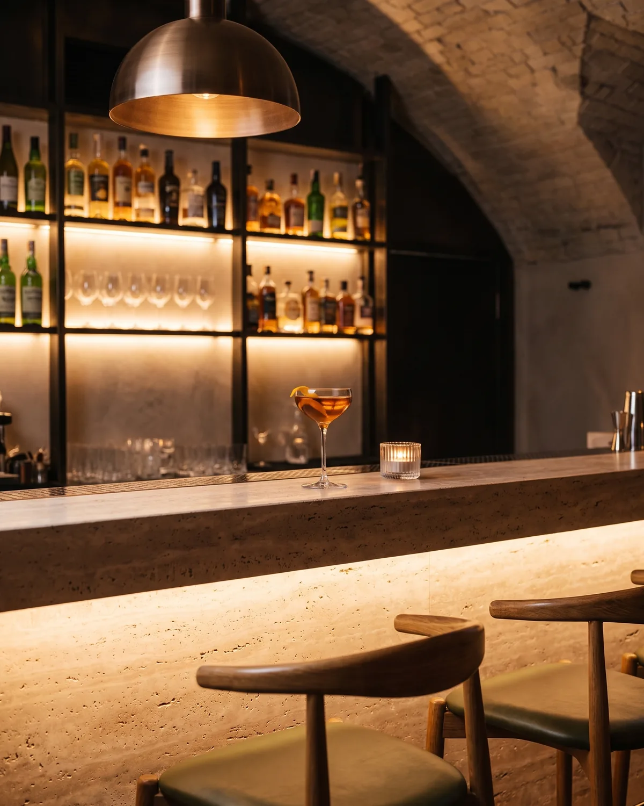
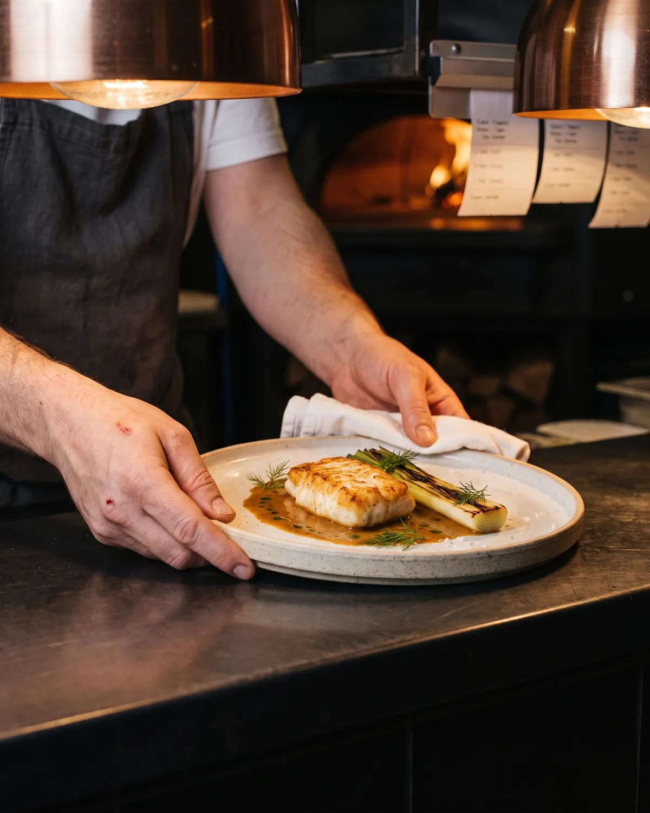
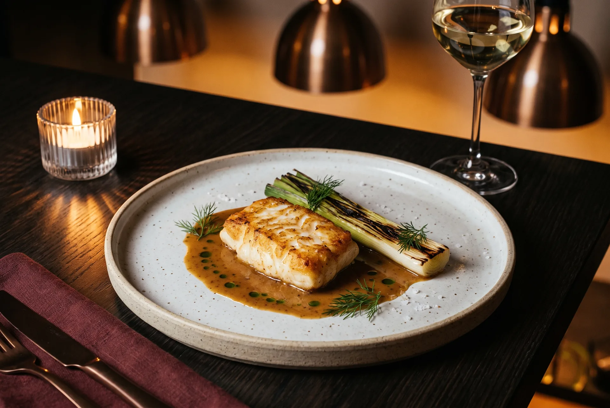
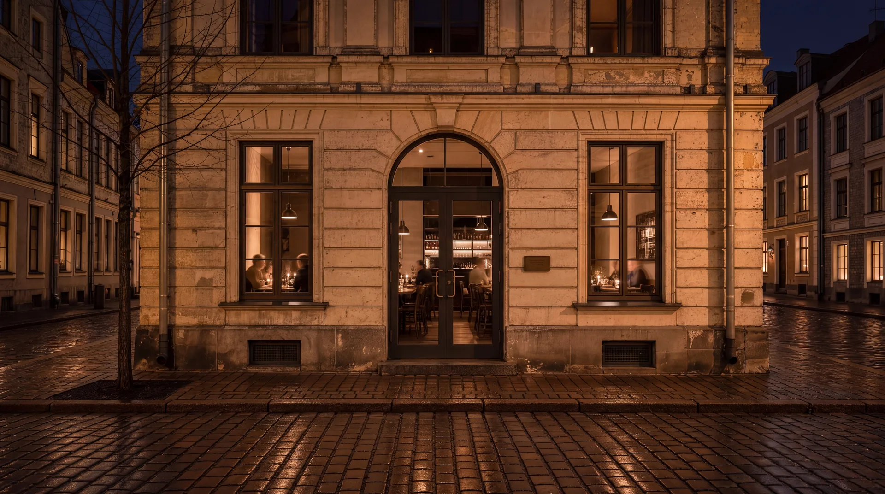
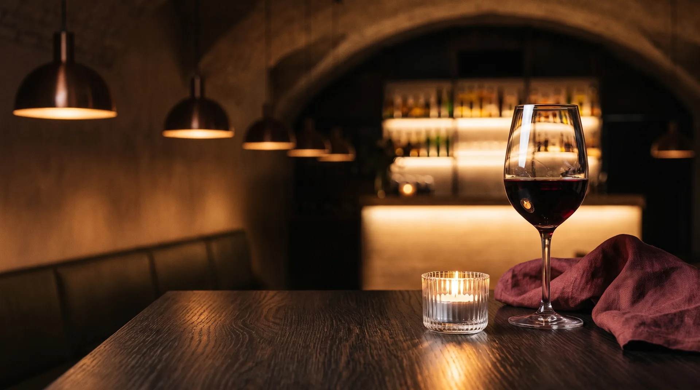

Twelve oak tables under a limewashed vault. A travertine bar. A hearth that is lit at four and left to burn down slowly through the night.

Low light, natural wine from small growers and a short list of stirred drinks. The counter is kept for walk-ins.

Birch, alder and apple wood. Almost everything we cook passes the fire, then the pass, then a last wipe of the rim.
38
Baltic, over fire
220 wines
22:30

And then, the plate.
Baltic codbrown butter, charred leek
Line-caught off the Kurzeme coast, roasted in its own crust, finished at the hearth and dressed with butter taken to hazelnut.
View the menu
An eveningworth staying for.
Dinner from six. The fire is left to burn down slowly, the wine stays open, and the bar keeps its lights on until one.
Reserve a table
Chooseyour evening.
Twelve tables, plus a counter kept for walk-ins. A table is yours for two and a half hours, and longer if the night asks for it.